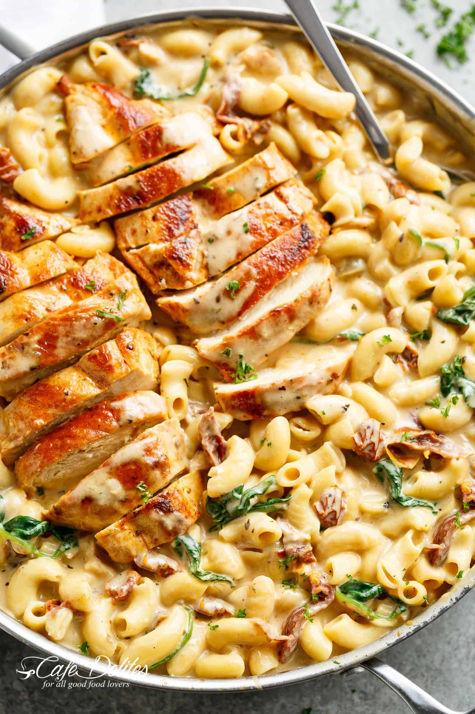

Tuscan Macaroni Chicken and Cheese

Description
This is a quick and easy one pot recipe! Golden brown chicken cutlet delicately spiced with paprika and parsley combines beautifully with macaroni and a delicately cheesy, italian sauce.
Ingredients
- Chicken breast
- Parsley
- Paprika
- Salt
- Pepper
- Macaroni
- Mozzarella
- Parmesan
- Tomato Paste
- Onion
- Garlic
- Olive Oil
- Spinach
- Chicken Broth
- Milk
- Flour
- Flatten and cook chicken breasts in olive oil until golden brown on both sides and cooked through
- Place chicken aside
- Mince garlic and onions. Cook in olive oil until aroma is released
- Pour chicken broth until it lightly simmers
- Put 2 tablespoons of tomato paste. Stir mixture occasionally
- Stir flour and let cook for several minutes
- add milk, chicken broth, italian herbs into a low simmer
- Add macaroni and stir occasionally
- Add spinach until wilted
- Remove pot from stove and add mozzarella and parmesan
- Slice cooked chicken and place into pan. Serve immediately